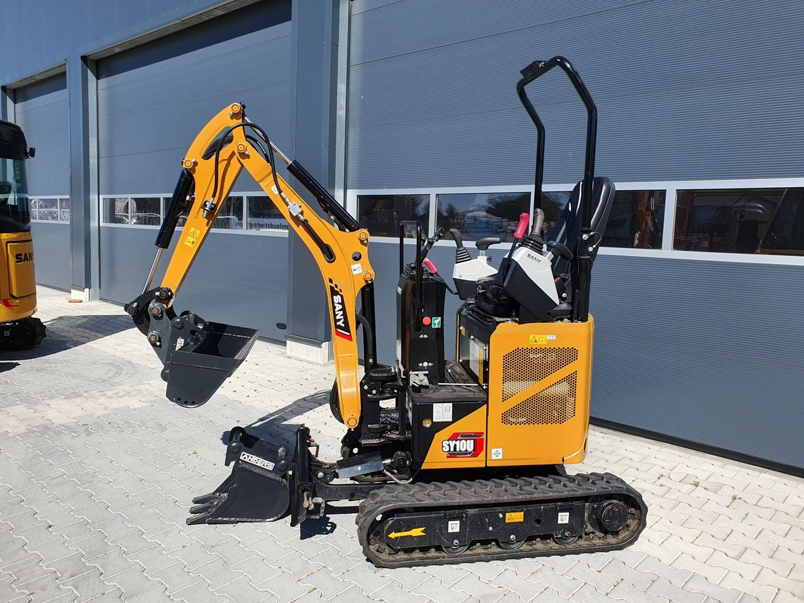
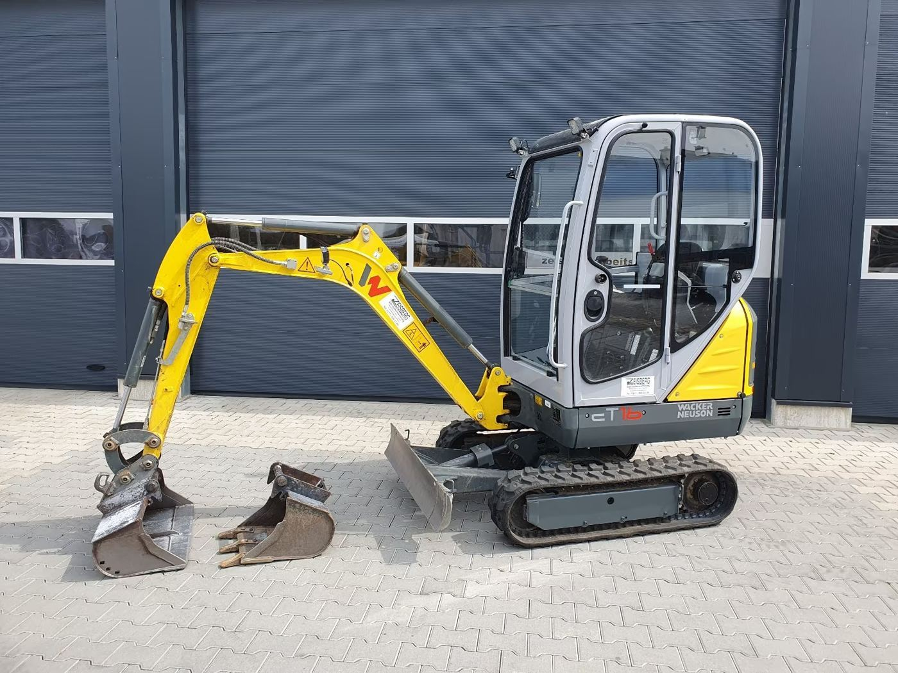
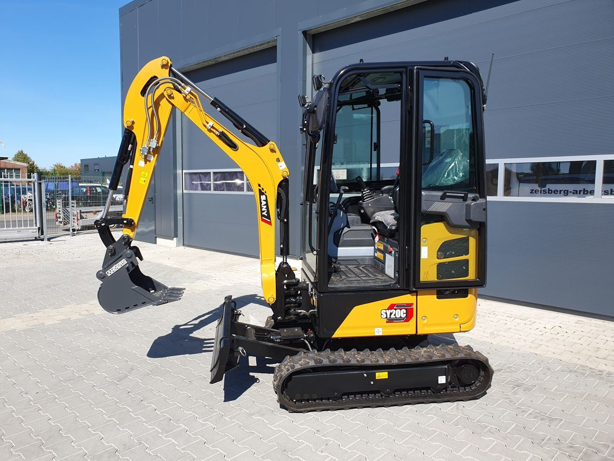

Först ST6P
Häcksler mit 80-km/h-Fahrgestell
- Stammstärke bis 15 cm
- Anti-Stress-System
- Gewicht 750 kg
- Leistungsstarker 37-PS-Benzinmotor
- 80-km/h-Fahrgestell
- Mit Führerscheinklasse B fahrbar
- Mietpreis pro Tag
- 150,00 € + MwSt. = 178,50 €
- Kaution
- 500 €
 0177 9582309
0177 9582309
Häcksler, Minibagger und Bautrockner mieten, direkt bei uns in Mönchengladbach-Hardt. Alle Geräte sind bei uns vorhanden.
Aufgrund der Kundennachfrage bieten wir weitere Geräte an. Alle Geräte sind bei uns vorhanden, wir mieten nichts bei Dritten zu.
Bring einen gültigen Personalausweis und deinen Führerschein mit. Mietbetrag und Kaution zahlst du bei Mietbeginn bar oder mit Karte.
Zwei Först-Häcksler für Äste und Stämme bis 15 cm. Mietbetrag und Kaution bei Mietbeginn in bar oder mit EC-Karte, keine Kreditkarte.
Häcksler mit 80-km/h-Fahrgestell
Häcksler mit Kettenfahrgestell
Wir vermieten Minibagger von 1,2 bis 2,0 Tonnen für unterschiedlichste Einsatzbereiche: von kompakten Arbeiten auf engem Raum bis zu Erd-, Garten- und Landschaftsbau. Passende Anhänger für den Transport kannst du direkt mitmieten. Alternativ liefern wir den Minibagger auf Anfrage direkt zu deiner Baustelle.

Minibagger, 1,2 t

Minibagger, 1,6 t

Minibagger, 2,0 t
Der Roderechen oder Reißzahn reißt Wurzeln von Sträuchern und Bodendeckern heraus. Mit dem Drainagelöffel (20 cm breit) gräbst du schmale Gräben für Rohre.
Wir vermieten Bautrockner und Raumentfeuchter der bekannten Firma Atika. Sie trocknen Räume nach Mauer-, Verputz- oder Estricharbeiten und helfen bei Feuchtigkeitsschäden. Die Bedienung ist einfach, der Stromanschluss ist 230 V.
Bautrockner / Raumentfeuchter
Bautrockner / Raumentfeuchter
Die wichtigsten Antworten auf einen Blick.
Ruf uns einfach an. Wir beraten dich persönlich.
0177 9582309Mietbetrag und Kaution zahlst du bei Mietbeginn bar oder mit Karte. Bei den Häckslern und Bautrocknern geht das mit EC-Karte, Kreditkarten nehmen wir dort nicht.
Einen gültigen Personalausweis und deinen Führerschein. Beides zeigst du bei Mietbeginn vor.
Passende Anhänger für den Transport kannst du direkt mitmieten. Alternativ liefern wir den Minibagger auf Anfrage direkt zu deiner Baustelle.
Die Preise gelten pro Arbeitstag mit bis zu 8 Stunden, Betriebsstunden darüber werden extra berechnet. Bei längerer Miete gibt es Rabatt: 3 Arbeitstage −10 %, 5 Arbeitstage −15 %, 10 Arbeitstage −20 %. Dazu kommen die Versicherung pro Tag, und der Diesel wird wieder aufgefüllt.
Ja, auf Anfrage vermieten wir weitere Geräte. Alle sind bei uns vorhanden, wir mieten nichts bei Dritten zu. Frag einfach nach, was du brauchst.
Kontakt
Sag uns kurz, was du vorhast. Wir melden uns schnell bei dir mit der passenden Bühne.
Tomphecke 20, Industriegebiet
41169 Mönchengladbach-Hardt
An der Nikolauskapelle 18
41169 Mönchengladbach
Wir sind für dich unterwegs in: